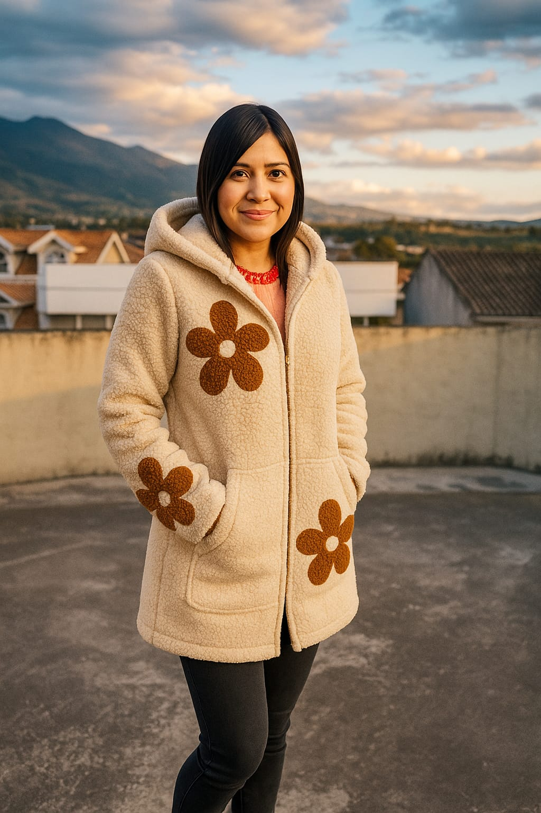
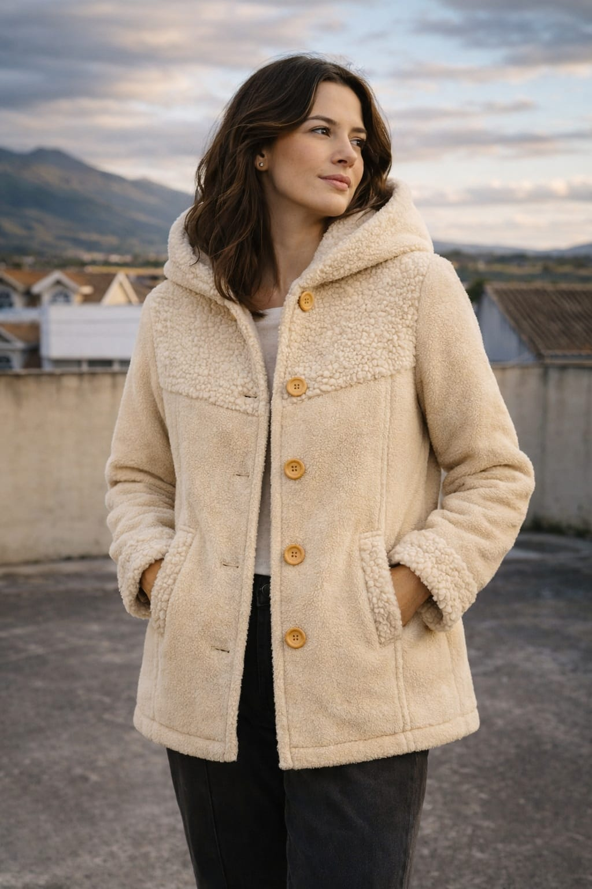
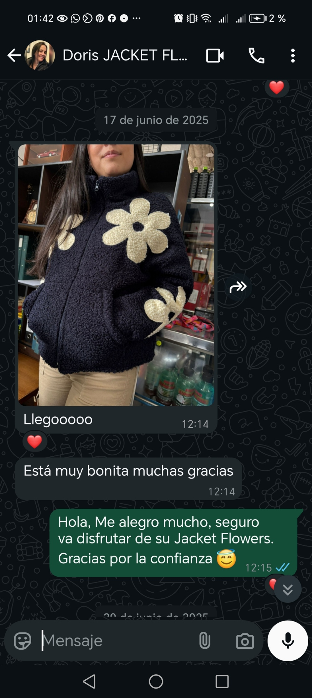
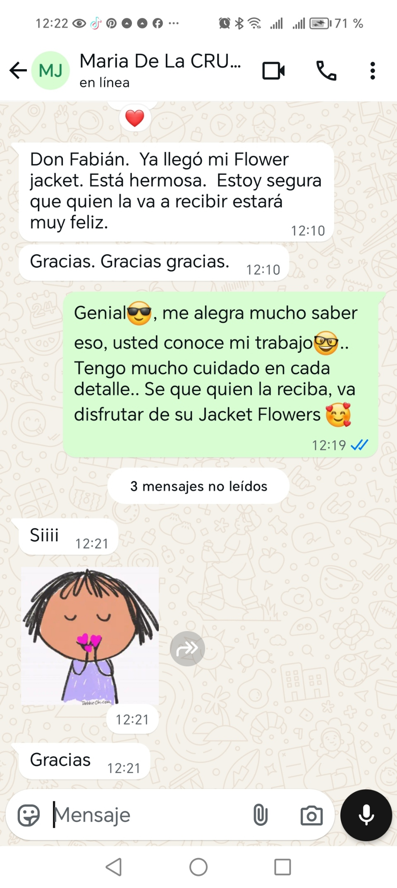
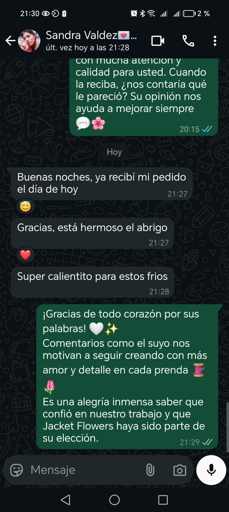

01Abrigos
Abrigo Flowers Largo 3/4
Su largo 3/4 y la textura sherpa de rizo corto crean una sensación acogedora; el cierre oculto y los bolsillos amplios completan el diseño.
Descubrir la prendaPara los días que piden un poco más de abrigo
Hay días para salir y otros que invitan a abrigarse un poco más. Encuentra texturas suaves y detalles florales para acompañarte con tu propio estilo.
Un abrigo. Un momento para ti.
La colección
Explora con calma las siluetas, los colores y los detalles. Quizá encuentres esa prenda que se vuelve favorita para los días frescos.

01Abrigos
Su largo 3/4 y la textura sherpa de rizo corto crean una sensación acogedora; el cierre oculto y los bolsillos amplios completan el diseño.
Descubrir la prendaChaquetas
Flores al frente y en las mangas sobre una textura sherpa suave: un detalle especial para llevar un poco de color contigo.
Descubrir la prenda
03Abrigos
Un diseño clásico para acompañarte en tus salidas y planes cotidianos, en varios colores y tallas XS a XXL.
Descubrir la prendaUna mirada desde Otavalo
Desde Otavalo, damos forma a abrigos y chaquetas pensados para esos momentos sencillos: una salida, una conversación larga o el camino de regreso a casa. Las texturas cálidas y los detalles florales te permiten expresar tu estilo a tu manera.
Conversemos por WhatsAppExperiencias Ñukawa

“¡Llegó! La Jacket Flowers refleja mi esencia.”

“Es para un regalo, la persona que la recibe estará muy feliz.”

“Todos me preguntan dónde la compré. ¡Está hermosa la chaqueta!”
Atención personalizada
Cuéntanos qué color y talla tienes en mente; te orientamos para que elijas la opción que más se siente como tú.
Conversar por WhatsApp